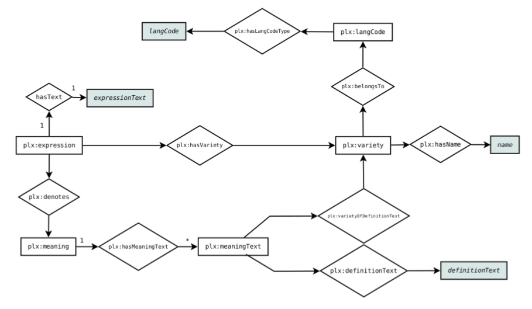

Linking Open Data cloud diagram, by Richard Cyganiak and Anja Jentzsch. CC-BY-SA. lod-cloud.net
On this page we collect our efforts of making PanLex part of the Linked Open Data cloud, which offers the following advantages:
| 2013 Sept 1 | New dump available! |
| 2013 Jul 9 | Updated documentation on this site with the following items:
|
| Integration with the GOLD and lemon data models | |
| 2013 Jul 5 | New dump generation in progress... Release planned this friday - Stay tuned! |
| Full Dump (~2.5GB compressed) (Preview) |
| DBpedia Links (~19MB) (Preview) |
| Ontology (~3.3K) |
The following SPARQL endpoints and corresponding HTML intefraces are available:
Linked Data resources reside in the namespace <http://ld.panlex.org/plx/> and are powered by the vsparql endpoint.
Example resources:
Example Queries:
| List translations for the lexeme "translation" | Compact translation table for "dictionary" |
Prefix plx: <http://ld.panlex.org/plx/>
Select ?ta ?m ?tb ?lvl ?l {
?ea rdfs:label ?ta .
?da plx:denotationExpression ?ea .
?da plx:denotationMeaning ?m .
?db plx:denotationMeaning ?m .
?db plx:denotationExpression ?eb .
?eb rdfs:label ?tb .
?eb plx:languageVariety ?lv .
?lv rdfs:label ?lvl .
?lv plx:languageVarietyOf ?l .
Filter(?ta = "translation"^^xsd:string)
}
Order By ?ta ?m ?tb ?lvl ?l
|
Prefix plx: <http://ld.panlex.org/plx/>
SELECT Distinct ?al ?alv ?alvl ?bl ?blvl ?blvo {
?ae rdfs:label ?al .
?ae plx:languageVariety ?alv .
?alv rdfs:label ?alvl .
?alv plx:languageVarietyOf ?alvo .
?alvo plx:iso639-3Code <http://ld.panlex.org/plx/iso639-3/eng> .
?ad plx:denotationExpression ?ae .
?ad plx:denotationMeaning ?m .
?bd plx:denotationMeaning ?m .
?bd plx:denotationExpression ?be .
?be rdfs:label ?bl .
?be plx:languageVariety ?blv .
?blv rdfs:label ?blvl .
?blv plx:languageVarietyOf ?blvo .
Filter(?al = "dictionary"^^xsd:string)
}
Order By ?al ?blvl ?bl ?blvo
|
| Run query: Virtuoso | Sparqlify | Run query: Virtuoso | Sparqlify |
These two images provide an overview of how classes and properties in the RDF version of PanLex relate.
|  |
The PanLex RDF mappings have been improved as to facilitate the integration of PanLex data with the following data models:
Example Query:
| List translations for the lexeme "apple" |
SELECT ?a ?ar ?b ?br WHERE {
?a
a lemon:LexicalEntry ;
lemon:lexicalForm ?af ;
lemon:sense ?s .
?af lemon:writtenRep ?ar .
?b
a lemon:LexicalEntry ;
lemon:sense ?s ;
lemon:lexicalForm ?bf .
?bf lemon:writtenRep ?br .
Filter(?ar = "apple")
}
LIMIT 10
|
| Run query: Virtuoso | Sparqlify |
Example Query:
| List all LinguisticSigns (correspond to PanLex's denotation entities) |
Select ?s {
?s a gold:LinguisticSign
}
Limit 10
|
| Run query: Virtuoso | Sparqlify |
Note: The metrics are currently not automatically updated and should thus only be seen as rough estimates. We are planning to put an automatic update procedure in place.
The following table summarizes the number of triples, classes and properties.
| Triples: | 272.043.070 |
| Classes: | 9 |
| Properties: | 8 |
This table lists the number of instances per class:
| Class | Instances |
|---|---|
| Sources | 5,643 |
| Expressions | 19,790,453 |
| Languages | 7,843 |
| Language Varieties | 9,310 |
| Meanings | 20,773,371 |
| Definitions | 2,747,892 |
| Denotations | 54,278,860 |
| Users | 23 |
| Licenses | 11 |
As PanLex is comprised of thousands of data sources, license information is included in the dataset for each source. The following table shows some examples on this subject.
| List all available licenses and their usage count | List source and their license | List source under public domain license |
Prefix plx: <http://ld.panlex.org/plx/>
Select ?l (Count(*) As ?c) {
?s plx:license ?l
}
Group By ?l
|
Prefix plx: <http://ld.panlex.org/plx/>
Select * {
?s
a plx:Source ;
plx:license ?l
}
Limit 100
|
Prefix plx: <http://ld.panlex.org/plx/>
Select * {
?s
a plx:Source ;
plx:license <http://ld.panlex.org/plx/license/nr>
}
Limit 100
|
| Run query: Virtuoso | Sparqlify | Run query: Virtuoso | Sparqlify | Run query: Virtuoso | Sparqlify |
The PanLex RDF dataset is created using the Sparqlify RDB-RDF mapping tool. The corresponding RDF view definitions are available here. The Linked Data interface is powered directly by the PanLex's Postgres database. For improved query performance, the source data is also dumped as RDF and loaded into an OpenLink's Virtuoso RDF store.
 |